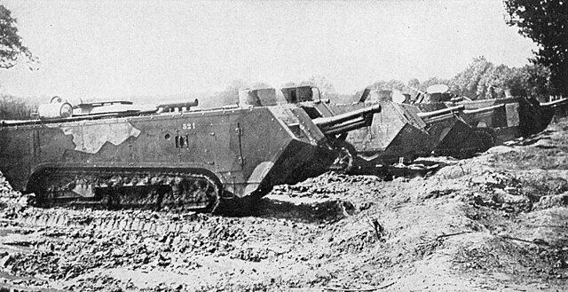

Heavy Tank | Perancis | Perang Dunia 1
| Saint-Chamond | |
|---|---|
|

|
|
| Spesifikasi | |
| Berat | 23 ton |
| Panjang | 8,9 m |
| Lebar | 2,7 m |
| Tinggi | 2,4 m |
| Awak | 8 |
| Perisai | 11-19 mm |
|
Senjata utama |
1× 75 mm Mle 1897 106 peluru |
|
Senjata pelengkap |
4× 8 mm Hotchkiss 96 peluru/sabuk |
| Jenis Mesin | Panhard-Levassor (94 hp) |
| Daya Jelajah | - |
| Kecepatan | 12 km/j |
Saint-Chamond adalah salah satu tank tempur awal yang
dikembangkan oleh Prancis selama Perang Dunia I. Tank ini merupakan
upaya untuk menciptakan kendaraan lapis baja yang mampu menerobos
parit-parit, kawat berduri, dan posisi pertahanan musuh di medan
perang parit yang statis. Dibangun oleh perusahaan
Compagnie des Forges et Aciéries de la Marine et d’Homécourt di
kota Saint-Chamond, tank ini menjadi salah satu kendaraan lapis baja
paling besar dan berat yang diproduksi selama perang tersebut.
Saint-Chamond memiliki penampilan khas dengan badan memanjang yang
menjorok ke depan, bahkan jauh melampaui trek rantainya. Desain ini
membuatnya terlihat besar dan kuat, tetapi sekaligus menyebabkan
banyak masalah di medan yang tidak rata. Tank ini diawaki oleh delapan
orang: komandan, pengemudi, mekanik, penembak utama, serta beberapa
penembak senapan mesin.
Persenjataan utamanya berupa meriam Canon de 75 mm modèle 1897,
senjata artileri lapangan legendaris Prancis yang dipasang di bagian
depan lambung tank. Selain itu, Saint-Chamond dilengkapi empat senapan
mesin Hotchkiss 8 mm, masing-masing ditempatkan di sisi-sisi
dan belakang untuk perlindungan terhadap infanteri musuh.
Tank ini menggunakan mesin bensin Panhard 4-silinder yang
menghasilkan sekitar 90 tenaga kuda, digabungkan dengan sistem
transmisi listrik rancangan insinyur Colonel FAMH Rimailho.
Kecepatan maksimumnya hanya sekitar 8–12 km/jam di medan datar,
tergantung kondisi tanah. Beratnya mencapai hampir 23 ton, dengan
panjang lebih dari 8,9 meter, menjadikannya salah satu kendaraan lapis
baja terbesar di masa itu.
Meskipun dilengkapi dengan senjata kuat dan pelindung yang cukup tebal
(sekitar 11–17 mm baja), Saint-Chamond memiliki kelemahan besar:
rantainya terlalu pendek dibandingkan panjang bodinya. Akibatnya, tank
ini sering terperangkap saat melintasi parit atau gundukan tanah —
suatu masalah besar di medan perang parit yang menjadi ciri khas
Perang Dunia I.
Secara umum, Saint-Chamond menunjukkan ambisi besar dalam
menggabungkan artileri dan mobilitas dalam satu platform, namun
keterbatasan teknologi pada masa itu membuat kinerjanya jauh dari
ideal.
Latar belakang pengembangan Saint-Chamond tidak bisa dilepaskan dari
perlombaan senjata baru yang muncul di tengah kebuntuan Perang Dunia
I. Ketika Prancis menyadari bahwa serangan infanteri tradisional tidak
lagi efektif melawan pertahanan parit Jerman, mereka mulai
bereksperimen dengan kendaraan lapis baja bersenjata berat untuk
membuka jalan bagi pasukan darat.
Pada tahun 1915, dua proyek utama tank Prancis dimulai hampir
bersamaan: Schneider CA1 dan Saint-Chamond. Kedua tank
ini dikembangkan secara terpisah oleh dua perusahaan industri besar
yang bersaing. Saint-Chamond merupakan hasil rancangan perusahaan FAMH
(Compagnie des Forges et Aciéries de la Marine et d’Homécourt),
dengan dukungan dari insinyur kolonel Emile Rimailho, yang sebelumnya
juga terlibat dalam pembuatan meriam 75 mm terkenal.
Prototipe Saint-Chamond pertama selesai pada awal 1916, dan produksi
massalnya dimulai tidak lama setelahnya. Antara tahun 1916 hingga
1918, sekitar 400 unit Saint-Chamond diproduksi. Tank ini pertama kali
digunakan dalam pertempuran pada April 1917, bersamaan dengan debut
tank Schneider di front barat.
Namun, hasil awalnya mengecewakan. Desain yang terlalu panjang membuat
Saint-Chamond mudah tersangkut di parit, sementara bobotnya yang berat
sering menyebabkan kerusakan pada mesin dan sistem transmisi. Rantai
pendeknya tidak mampu memberikan traksi yang memadai di tanah
berlumpur atau bergelombang. Banyak unit yang terjebak di medan
sendiri sebelum sempat mencapai garis musuh.
Meskipun begitu, tank ini memiliki keunggulan dalam daya tembak.
Meriam 75 mm-nya jauh lebih kuat daripada senjata tank Inggris atau
Schneider pada saat itu, memungkinkan Saint-Chamond memberikan
dukungan tembakan yang efektif dari jarak jauh. Dalam beberapa
situasi, terutama di medan yang relatif datar, Saint-Chamond mampu
bertindak sebagai artileri bergerak yang cukup mematikan.
Pada pertengahan tahun 1918, tank ini mulai digantikan oleh
Renault FT, sebuah desain revolusioner yang lebih kecil,
lincah, dan efisien. Renault FT kemudian menjadi standar baru tank
masa depan, sementara Saint-Chamond berakhir sebagai simbol dari masa
awal eksperimen lapis baja Prancis. Produksi Saint-Chamond dihentikan
setelah perang berakhir, dan hanya beberapa unit yang bertahan hingga
kini sebagai koleksi museum, termasuk satu contoh yang direstorasi
secara penuh dan dipamerkan di Musée des Blindés, Saumur,
Prancis.
Meskipun dianggap gagal secara teknis, Saint-Chamond memainkan peran
penting dalam sejarah perkembangan tank, karena menjadi salah satu
percobaan awal dalam memadukan kekuatan artileri dan kendaraan lapis
baja. Dari kegagalan inilah, Prancis dan negara-negara lain belajar
untuk menciptakan tank yang lebih efisien di masa depan.
Saint-Chamond adalah salah satu tank tempur paling awal dalam sejarah,
digunakan oleh Prancis selama Perang Dunia I. Mulai beroperasi pada
tahun 1917, kendaraan ini merupakan hasil desain awal yang masih
eksperimental dalam memahami konsep tank modern. Saint-Chamond
dilengkapi meriam 75 mm M1897, menjadikannya salah satu tank pertama
yang membawa artileri berat di dalam sasis berlapis baja.
Namun, desainnya memiliki banyak kelemahan — bobot mencapai 24 ton dan
lambung yang terlalu panjang membuatnya sulit melintasi parit dan
medan berlumpur khas Front Barat. Meski begitu, tank ini tetap menjadi
tonggak sejarah penting bagi perkembangan kendaraan lapis baja,
menandai peralihan dari artileri statis menuju kendaraan tempur
bergerak. Saint-Chamond dipensiunkan segera setelah perang berakhir
pada 1918, digantikan oleh Renault FT yang lebih kecil, ringan, dan
efisien.
Daftar Isi